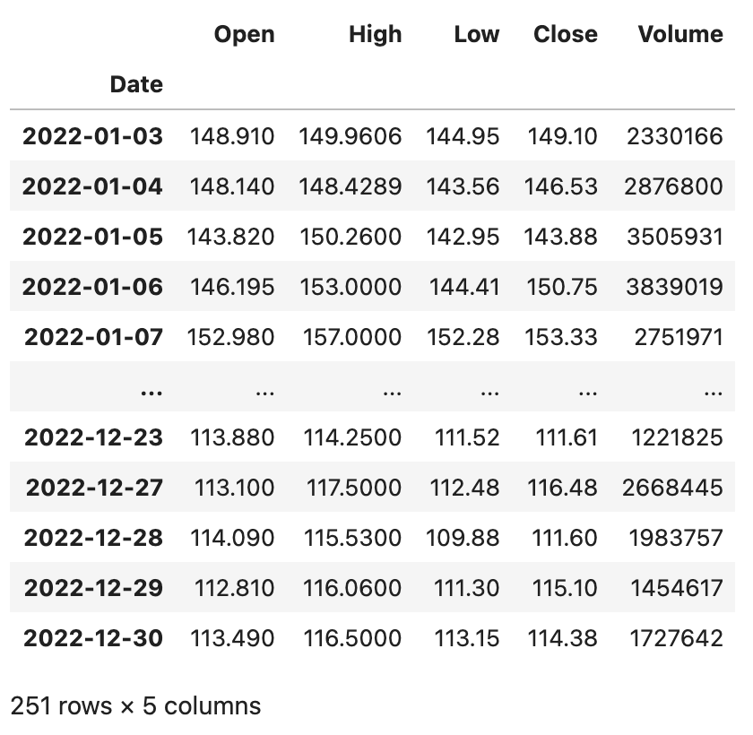
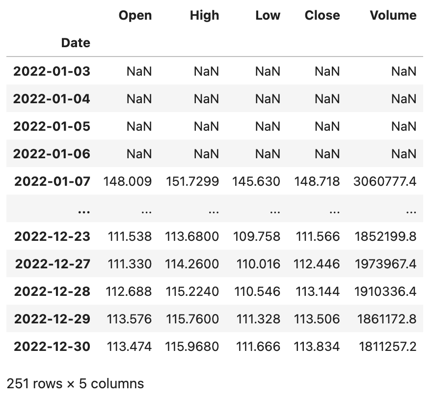
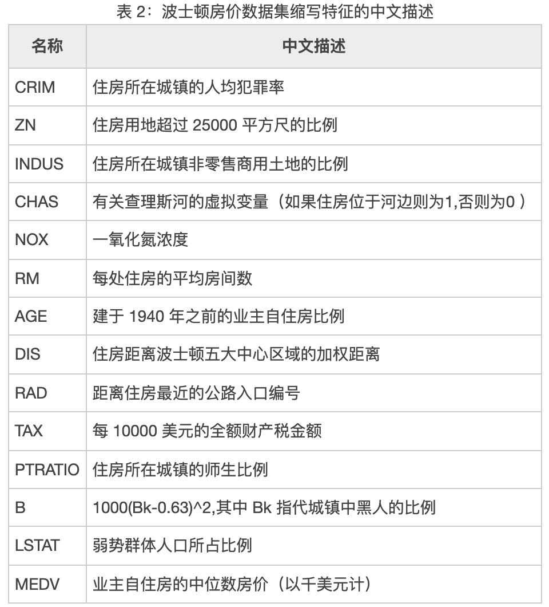
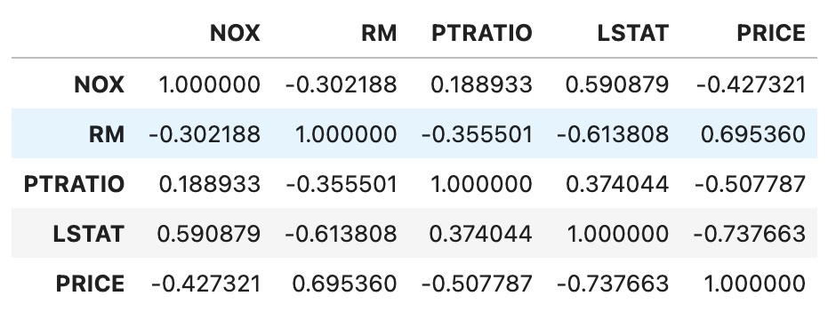
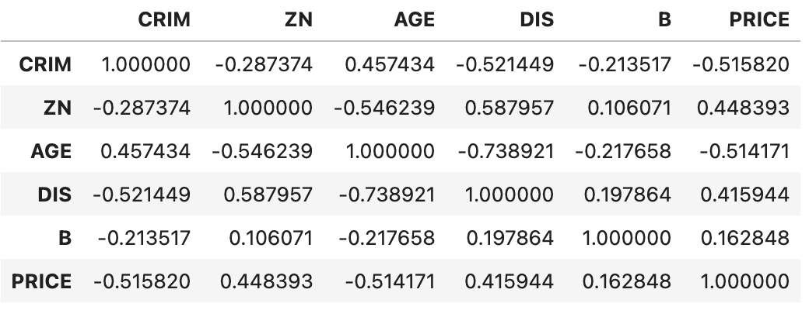

76.深入浅出pandas 5
深入浅出pandas-5¶
我们再来补充一些使用DataFrame做数据分析时会使用到的操作，这些操作不仅常见而且也非常重要。
计算同比环比¶
我们之前讲过一个统计月度销售额的例子，我们可以通过groupby方法做分组聚合，也可以通过pivot_table生成透视表，如下所示。
输出：
在得到月度销售额之后，如果我们需要计算月环比，这里有两种方案。第一种方案是我们可以使用shift方法对数据进行移动，将上一个月的数据与本月数据对齐，然后通过(本月销售额 - 上月销售额) / 上月销售额来计算月环比，代码如下所示。
输出：
在上面的例子中，shift方法的参数为1表示将数据向下移动一个单元，当然我们可以使用参数-1将数据向上移动一个单元。相信大家能够想到，如果我们有更多年份的数据，我们可以将参数设置为12，这样就可以计算今年的每个月与去年的每个月之间的同比。
输出：
说明：使用 JupyterLab 时，可以通过
DataFrame对象的style属性在网页中对其进行渲染，上面的代码通过Styler对象的format方法将环比格式化为百分比进行显示，此外还指定了将空值替换为--------。
更为简单的第二种方案是直接使用pct_change方法计算变化的百分比，我们先将之前的上月销售额和环比列删除掉。
接下来，我们使用DataFrame对象的pct_change方法完成环比的计算。值得一提的是，pct_change方法有一个名为periods的参数，它的默认值是1，计算相邻两项数据变化的百分比，这不就是我们想要的环比吗？如果我们有很多年的数据，在计算时把这个参数的值修改为12，就可以得到相邻两年的月同比。
窗口计算¶
DataFrame对象的rolling方法允许我们将数据置于窗口中，然后用函数对窗口中的数据进行运算和处理。例如，我们获取了某只股票近期的数据，想制作5日均线和10日均线，那么就需要先设置窗口再进行运算。我们先用如下所示的代码读取2022年百度的股票数据，数据文件可以通过下面的链接来获取。
输出：

上面的DataFrame有Open、High、Low、Close、Volume五个列，分别代表股票的开盘价、最高价、最低价、收盘价和成交量，接下来我们对百度的股票数据进行窗口计算。
输出：

我们也可以在Series上使用rolling设置窗口并在窗口内完成运算，例如我们可以对上面的百度股票收盘价（Close列）计算5日均线和10日均线，并使用merge函数将其组装到一个DataFrame对象中并绘制出双均线图，代码如下所示。
输出：

相关性判定¶
在统计学中，我们通常使用协方差（covariance）来衡量两个随机变量的联合变化程度。如果变量 \(X\) 的较大值主要与另一个变量 \(Y\) 的较大值相对应，而两者较小值也相对应，那么两个变量倾向于表现出相似的行为，协方差为正。如果一个变量的较大值主要对应于另一个变量的较小值，则两个变量倾向于表现出相反的行为，协方差为负。简单的说，协方差的正负号显示着两个变量的相关性。方差是协方差的一种特殊情况，即变量与自身的协方差。
如果 \(X\) 和 \(Y\) 是统计独立的，那么二者的协方差为0，这是因为在 \(X\) 和 \(Y\) 独立的情况下：
协方差的数值大小取决于变量的大小，通常是不容易解释的，但是正态形式的协方差可以显示两变量线性关系的强弱。在统计学中，皮尔逊积矩相关系数就是正态形式的协方差，它用于度量两个变量 \(X\) 和 \(Y\) 之间的相关程度（线性相关），其值介于-1到1之间。
估算样本的协方差和标准差，可以得到样本皮尔逊系数，通常用希腊字母 \(\rho\) 表示。
我们用 \(\rho\) 值判断指标的相关性时遵循以下两个步骤。
- 判断指标间是正相关、负相关，还是不相关。
- 当 \(\rho \gt 0\)，认为变量之间是正相关，也就是两者的趋势一致。
- 当 \(\rho \lt 0\)，认为变量之间是负相关，也就是两者的趋势相反。
- 当 \(\rho \approx 0\)，认为变量之间是不相关的，但并不代表两个指标是统计独立的。
- 判断指标间的相关程度。
- 当 \(\rho\) 的绝对值在 \([0.6,1]\) 之间，认为变量之间是强相关的。
- 当 \(\rho\) 的绝对值在 \([0.1,0.6)\) 之间，认为变量之间是弱相关的。
- 当 \(\rho\) 的绝对值在 \([0,0.1)\) 之间，认为变量之间没有相关性。
皮尔逊相关系数适用于：
- 两个变量之间是线性关系，都是连续数据。
- 两个变量的总体是正态分布，或接近正态的单峰分布。
- 两个变量的观测值是成对的，每对观测值之间相互独立。
这里，我们顺便说一下，如果两组变量并不是来自于正态总体的连续值，我们该如何判断相关性呢？对于定序尺度（等级），我们可以使用斯皮尔曼秩相关系数，其计算公式如下所示： $$ r_{s}=1-{\frac {6\sum d_{i}^{2}}{n(n^{2}-1)}} $$ 其中，\(d_{i}=\operatorname {R} (X_{i})-\operatorname {R} (Y_{i})\)，即每组观测中两个变量的等级差值，\(n\)为观测样本数。
对于定类尺度（类别），我们可以使用卡方检验的方式来判定其是否相关。其实很多时候，连续值也可以通过分箱的方式处理成离散的等级或类别，然后使用斯皮尔曼秩相关系数或卡方检验的方式来判定相关性。
DataFrame对象的cov方法和corr方法分别用于计算协方差和相关系数，corr方法有一个名为method的参数，其默认值是pearson，表示计算皮尔逊相关系数；除此之外，还可以指定kendall或spearman来计算肯德尔系数或斯皮尔曼秩相关系数。
我们从名为boston_house_price.csv的文件中获取著名的波士顿房价数据集来创建一个DataFrame。
输出：

说明：上面代码中使用了相对路径来访问 CSV 文件，也就是说 CSV 文件在当前工作路径下名为
data的文件夹中。如果需要上面例子中的 CSV 文件，可以通过下面的百度云盘地址进行获取。链接：https://pan.baidu.com/s/1rQujl5RQn9R7PadB2Z5g_g?pwd=e7b4，提取码：e7b4。
可以看出，该数据集中包含了诸多影响房价的特征，包括犯罪率、一氧化氮浓度、平均房间数、低收入人群占比等，其中PRICE代表房价，具体情况如下所示。

接下来，我们将其中可以视为来自于正态总体的连续值，通过corr方法计算皮尔逊相关系数，看看哪些跟房价是正相关或负相关的关系，代码如下所示。
输出：

可以看出，平均房间数（RM）跟房价有较强的正相关性，而低收入人群占比（LSTAT）跟房价之间存在明显的负相关性。
斯皮尔曼秩相关系数对数据条件的要求没有皮尔逊相关系数严格，只要两个变量的观测值是成对的等级数据，或者是由连续变量转化成等级的数据，不论两个变量的总体分布形态、样本容量的大小如何，都可以用斯皮尔曼等级相关系数来进行研究。我们可以通过下面的方式对部分特征进行预处理，然后计算斯皮尔曼秩相关系数。
输出：

可以看出，房价跟犯罪率（CRIM）和房龄（AGE）之间存在较为明显的负相关关系，跟住房用地尺寸（ZN）存在微弱的正相关关系。相关性可以帮助我们在实际工作中找到业务抓手，即找到那些能够影响或改变工作结果的相关因素。